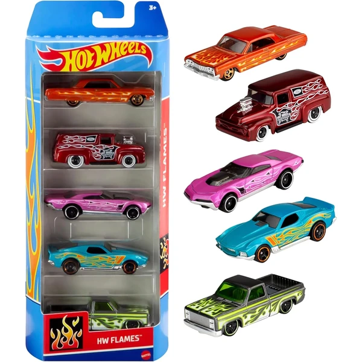
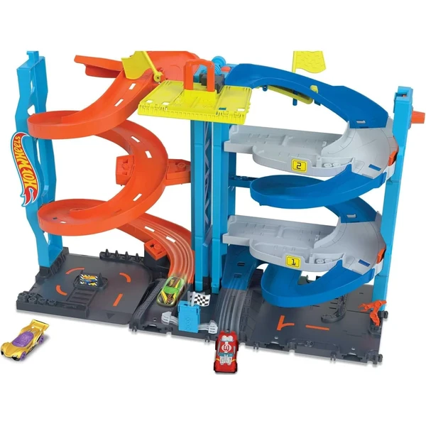
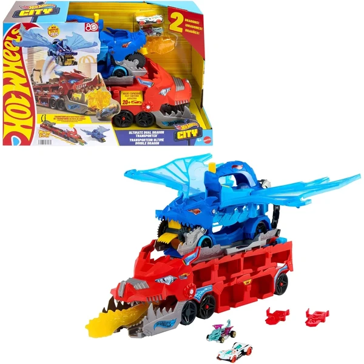
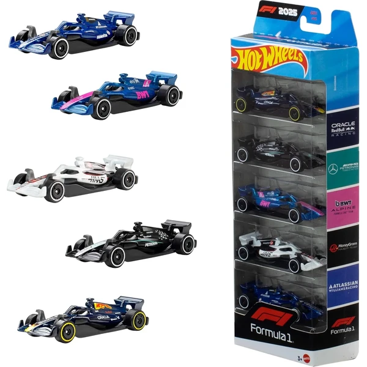
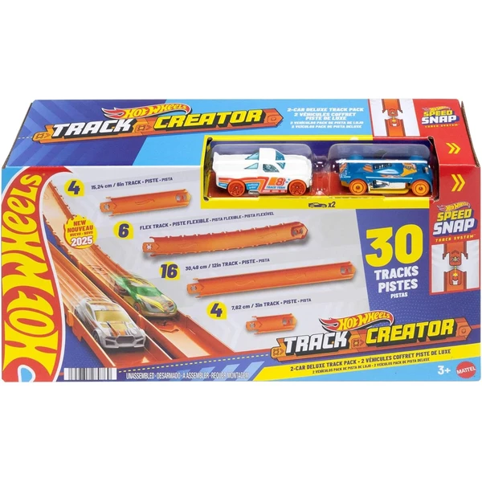
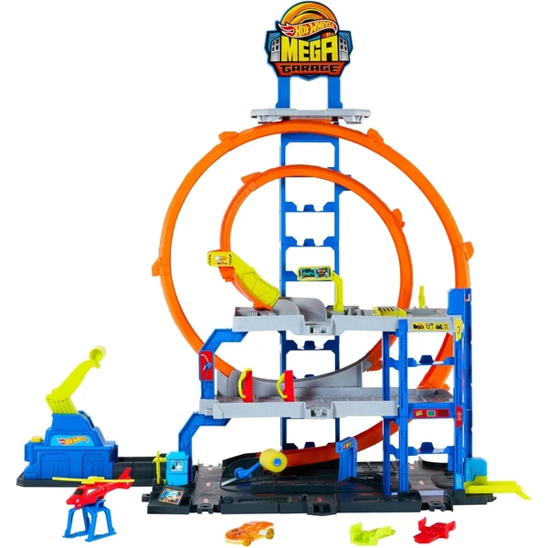

Hot Wheels Pack de 10 Vehículos
Un pack de 10 coches Hot Wheels a escala 1:64 con modelos surtidos, ideal para empezar o ampliar una colección con distintos diseños y temáticas.
⭐ ¿Por qué nos gusta?
- ✔ 10 coches en un mismo pack.
- ✔ Escala 1:64 con acabados detallados.
- ✔ Modelos variados, buenos para coleccionar.
💬 Lo que más destacan las familias
Lo que más suele gustar es tener de golpe un buen surtido de coches distintos para empezar a jugar o a coleccionar. Los niños suelen entretenerse comparando diseños y eligiendo sus favoritos del pack.
Ver en Amazon

Hot Wheels Pack de 5 Autos
La versión más pequeña del pack de coches Hot Wheels, con 5 vehículos a escala 1:64 de temáticas variadas, ideal como primer contacto con la marca.
⭐ ¿Por qué nos gusta?
- ✔ Formato más pequeño, ideal para empezar.
- ✔ Temáticas variadas en cada pack.
- ✔ Compatible con el resto de pistas Hot Wheels.
💬 Lo que más destacan las familias
Muchos padres coinciden en que es una buena manera de probar la marca antes de decidirse por packs más grandes. Las temáticas variadas de los coches también dan pie a que cada niño encuentre uno que le enganche especialmente.
Ver en Amazon

Hot Wheels Caja de Acrobacias Deluxe
Una caja de pista con curvas inclinadas, zona de choques y dos coches incluidos, que se guarda plegada en su propia base para llevarla de un lado a otro.
⭐ ¿Por qué nos gusta?
- ✔ Más de 3 formas distintas de montar la pista.
- ✔ Incluye 2 coches para empezar a jugar.
- ✔ Se guarda plegada en su propia caja.
💬 Lo que más destacan las familias
Una de las cosas más comentadas es que da mucho más juego que tener solo coches sueltos, porque ahora hay una pista real para hacer carreras y choques. Poder montarla de varias formas también hace que no se cansen de la misma configuración.
Ver en Amazon

Hot Wheels Pack de 20 Coches
Un pack grande de 20 coches Hot Wheels a escala 1:64 con modelos surtidos, ideal para empezar una colección amplia de golpe.
⭐ ¿Por qué nos gusta?
- ✔ 20 coches en un mismo pack.
- ✔ Escala 1:64 con detalles realistas.
- ✔ Modelos surtidos, ideal para coleccionar.
💬 Lo que más destacan las familias
Muchos padres destacan que es la forma más rentable de conseguir una buena colección de golpe, sin comprar coches sueltos. La variedad de modelos también engancha porque siempre hay alguno nuevo que descubrir.
Ver en Amazon

Hot Wheels City Camión Autopista
Un camión de transporte 3 en 1 que se convierte en una pista de más de 182 cm con lanzador doble, y guarda hasta 22 coches en sus compartimentos. Incluye 3 vehículos.
⭐ ¿Por qué nos gusta?
- ✔ Se transforma en pista de más de 182 cm.
- ✔ Almacena hasta 22 coches.
- ✔ Incluye 3 vehículos Hot Wheels.
💬 Lo que más destacan las familias
Se repite bastante el comentario de que da mucho juego al combinar almacenaje y pista de carreras en un mismo set. El lanzador doble también se valora porque permite competir entre dos coches a la vez.
Ver en Amazon

Theo Klein Maletín para 18 Coches
Un maletín de metal con separadores internos para guardar hasta 18 coches Hot Wheels a escala 1:64, con asa de transporte para llevarlo de un lado a otro.
⭐ ¿Por qué nos gusta?
- ✔ Guarda hasta 18 coches a escala 1:64.
- ✔ Asa de transporte, fácil de llevar.
- ✔ Estructura de metal resistente.
💬 Lo que más destacan las familias
Muchos padres valoran que ayude a mantener la colección ordenada, algo que no siempre es fácil con tantos coches sueltos. El asa de transporte también se destaca porque es cómodo llevarlo de viaje o a casa de los abuelos.
Ver en Amazon

Hot Wheels Track Builder Lata de Gasolina
Una caja de pistas con forma de bidón que se transforma en parte del circuito, con piezas compatibles con otros sets de Hot Wheels. Incluye un vehículo para empezar a jugar.
⭐ ¿Por qué nos gusta?
- ✔ El envase se transforma en parte de la pista.
- ✔ Compatible con otros sets Hot Wheels.
- ✔ Incluye un vehículo Hot Wheels.
💬 Lo que más destacan las familias
Lo que más suele gustar es que la propia caja de almacenaje se convierta en parte del circuito, así no sobra ni se pierde nada. La compatibilidad con otras pistas también se valora porque permite ampliar el montaje poco a poco.
Ver en Amazon

Hot Wheels Color Shifters
Un coche Hot Wheels que cambia de color al mojarlo con agua templada y recupera su tono original con agua fría, añadiendo un punto de sorpresa al juego habitual con coches.
⭐ ¿Por qué nos gusta?
- ✔ Cambia de color al mojarlo con agua templada.
- ✔ Recupera el color original con agua fría.
- ✔ Se puede repetir el efecto una y otra vez.
💬 Lo que más destacan las familias
Entre los comentarios más habituales aparece la sorpresa que causa el cambio de color, algo que engancha mucho durante el baño o el juego con agua. Repetir el truco una y otra vez es lo que más entretiene a los peques.
Ver en Amazon

Hot Wheels Pack 10 Coches de Carreras
Un pack de 10 coches de carreras a escala 1:64 con licencia oficial de marcas como Porsche, Bugatti o Koenigsegg, pensado para ampliar una colección con modelos de gama alta.
⭐ ¿Por qué nos gusta?
- ✔ 10 coches con licencia oficial de marcas reales.
- ✔ Escala 1:64, detalles auténticos.
- ✔ Modelos variados en cada pack.
💬 Lo que más destacan las familias
Muchos padres destacan que los diseños son más detallados que en otros packs básicos, algo que valoran especialmente los peques más fans de los coches. Tener marcas reconocibles como Porsche o Bugatti también suma puntos.
Ver en Amazon

Hot Wheels Torre de Carreras
Una torre de 66 cm que pasa de pista de un solo carril a circuito de dos carriles con ascensor incluido, pensada para hacer carreras entre dos coches. Incluye un vehículo.
⭐ ¿Por qué nos gusta?
- ✔ Se transforma de un carril a dos carriles.
- ✔ Ascensor funcional para subir los coches.
- ✔ Se conecta con otros sets de Hot Wheels.
💬 Lo que más destacan las familias
Lo que más suele gustar es ver cómo el ascensor sube los coches automáticamente antes de la carrera, un detalle que llama mucho la atención. La altura de la torre también se valora porque da mucho espectáculo en poco espacio.
Ver en Amazon

Hot Wheels Premium Car Culture Pack 2
Un pack de 2 coches Hot Wheels Premium con neumáticos Real Riders y chasis metálico, pensado para coleccionistas que buscan un acabado más cuidado que el de la gama estándar.
⭐ ¿Por qué nos gusta?
- ✔ Neumáticos Real Riders, más realistas.
- ✔ Chasis de metal, acabado premium.
- ✔ 2 coches con temáticas emparejadas.
💬 Lo que más destacan las familias
Se repite bastante el comentario de que el acabado se nota más cuidado que en los coches básicos, con detalles que gustan especialmente a los coleccionistas. El chasis de metal también se valora porque da más sensación de calidad.
Ver en Amazon

Hot Wheels City Dragón Transportador
Un set con dos dragones que atrapan y guardan los coches, capaz de transformarse en una pista de dos carriles con capacidad para más de 20 vehículos. Incluye dos coches metálicos.
⭐ ¿Por qué nos gusta?
- ✔ Dos dragones que atrapan y guardan coches.
- ✔ Se transforma en pista de dos carriles.
- ✔ Almacena más de 20 vehículos.
💬 Lo que más destacan las familias
Muchos padres destacan que el factor sorpresa de los dragones que "engullen" los coches engancha mucho al juego. La combinación de almacenaje y pista de carreras en un mismo set también se valora bastante.
Ver en Amazon

Hot Wheels Fórmula 1 Pack de 5
Un pack de 5 coches de Fórmula 1 a escala 1:64 con licencia oficial, pensado tanto para jugar como para exponer en una estantería.
⭐ ¿Por qué nos gusta?
- ✔ 5 coches de Fórmula 1 con licencia oficial.
- ✔ Escala 1:64, detalles auténticos.
- ✔ Válidos para jugar o para coleccionar.
💬 Lo que más destacan las familias
Lo que más suele gustar es tener coches de Fórmula 1 reconocibles en un mismo pack, algo que engancha a los fans de las carreras. El acabado detallado también se valora porque queda bien expuesto en una estantería.
Ver en Amazon

Hot Wheels Track Creator Deluxe
Un pack de pistas de 7,6 metros con piezas de distintos tamaños y dos coches incluidos, pensado para crear un circuito propio o ampliar uno ya existente.
⭐ ¿Por qué nos gusta?
- ✔ 7,6 metros de pista en distintos tamaños.
- ✔ Incluye 2 coches para empezar a jugar.
- ✔ Compatible con pistas antiguas y nuevas.
💬 Lo que más destacan las familias
Muchos padres valoran que la cantidad de pista incluida permita montar circuitos bastante grandes sin comprar packs adicionales. La compatibilidad con pistas antiguas también se destaca porque aprovecha lo que ya se tenga en casa.
Ver en Amazon

Hot Wheels Megaparking con Helicóptero
Un parking de varios niveles con capacidad para 37 coches a escala 1:64, con looping, lavadero y zona de reparación. Incluye un coche metálico y un helicóptero de transporte.
⭐ ¿Por qué nos gusta?
- ✔ Estacionamiento para hasta 37 coches.
- ✔ Incluye looping, lavadero y zona de reparación.
- ✔ Incluye coche metálico y helicóptero.
💬 Lo que más destacan las familias
Entre los comentarios más habituales aparece lo bien pensados que están los distintos niveles de juego, con zonas de lavado y reparación que dan pie a mucha imaginación. La capacidad de almacenaje también se valora porque ordena bien la colección de coches.
Ver en Amazon